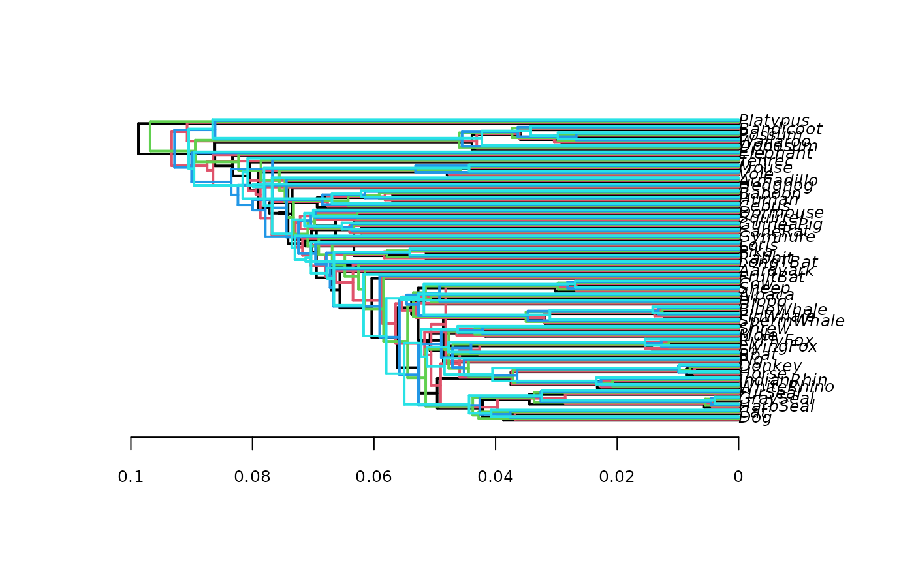
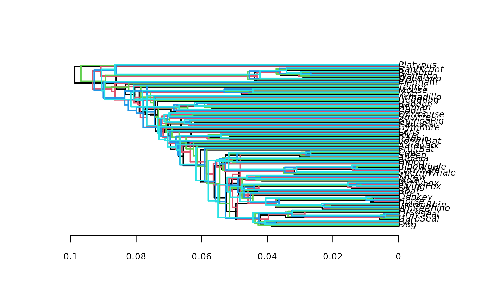

An R function to plot trees similar to those produced by DensiTree.
Usage
densiTree(x, type = "phylogram", ..., alpha = 1/length(x),
consensus = NULL, direction = "rightwards", optim = FALSE,
scaleX = FALSE, col = 1, width = 1, lty = 1, cex = 0.8, font = 3,
tip.color = 1, adj = 0, srt = 0, underscore = FALSE,
label.offset = 0, scale.bar = TRUE, jitter = list(amount = 0, random =
TRUE), tip.dates = NULL, xlim = NULL, ylim = NULL,
show.consensus = FALSE)Arguments
- x
an object of class
multiPhylo.- type
a character string specifying the type of phylogeny, so far "cladogram" (default) or "phylogram" are supported.
- ...
further arguments to be passed to plot.
- alpha
parameter for semi-transparent colors.
- consensus
A tree or character vector which is used to define the order of the tip labels.
- direction
a character string specifying the direction of the tree. Four values are possible: "rightwards" (the default), "leftwards", "upwards", and "downwards".
- optim
not yet used.
- scaleX
scale trees to have identical heights.
- col
a scalar or vector giving the colours used to draw the edges for each plotted phylogeny. These are taken to be in the same order than input trees x. If fewer colours are given than the number of trees, then the colours are recycled.
- width
edge width.
- lty
line type.
- cex
a numeric value giving the factor scaling of the tip labels.
- font
an integer specifying the type of font for the labels: 1 (plain text), 2 (bold), 3 (italic, the default), or 4 (bold italic).
- tip.color
color of the tip labels.
- adj
a numeric specifying the justification of the text strings of the labels: 0 (left-justification), 0.5 (centering), or 1 (right-justification).
- srt
a numeric giving how much the labels are rotated in degrees.
- underscore
a logical specifying whether the underscores in tip labels should be written as spaces (the default) or left as are (if TRUE).
- label.offset
a numeric giving the space between the nodes and the tips of the phylogeny and their corresponding labels.
- scale.bar
a logical specifying whether add scale.bar to the plot.
- jitter
allows to shift trees. a list with two arguments: the amount of jitter and random or equally spaced (see details below)
- tip.dates
A named vector of sampling times associated with the tips.
- xlim
the x limits of the plot.
- ylim
the y limits of the plot.
- show.consensus
superimpose the consensus tree?
Details
If no consensus tree is provided densiTree computes a consensus tree,
and if the input trees have different labels a mrp.supertree as a backbone.
This should avoid too many unnecessary crossings of edges.
Trees should be rooted, other wise the output may not be visually pleasing.
jitter shifts trees a bit so that they are not exactly on top of each
other.
If amount == 0, it is ignored. If random=TRUE the result of the
permutation is runif(n, -amount, amount), otherwise
seq(-amount, amount, length=n), where n <- length(x).
References
densiTree is inspired from the great DensiTree program of Remco Bouckaert.
Remco R. Bouckaert (2010) DensiTree: making sense of sets of phylogenetic trees Bioinformatics, 26 (10), 1372-1373.
Author
Klaus Schliep klaus.schliep@gmail.com
Examples
data(Laurasiatherian)
set.seed(1)
bs <- bootstrap.phyDat(Laurasiatherian, FUN =
function(x) upgma(dist.hamming(x)), bs=25)
# cladogram nice to show topological differences
densiTree(bs, type="cladogram", col="blue")
densiTree(bs, type="phylogram", col="green", direction="downwards", width=2)
 # show consensus tree
tree_compat <- allCompat(bs, rooted=TRUE) |> add_edge_length(bs)
densiTree(bs, type="phylogram", col="green", consensus = tree_compat,
show.consensus=TRUE)
# show consensus tree
tree_compat <- allCompat(bs, rooted=TRUE) |> add_edge_length(bs)
densiTree(bs, type="phylogram", col="green", consensus = tree_compat,
show.consensus=TRUE)
 # plot five trees slightly shifted, no transparent color
densiTree(bs[1:5], type="phylogram", col=1:5, width=2, jitter=
list(amount=.3, random=FALSE), alpha=1)

if (FALSE) { # \dontrun{
# phylograms are nice to show different age estimates
require(PhyloOrchard)
data(BinindaEmondsEtAl2007)
BinindaEmondsEtAl2007 <- .compressTipLabel(BinindaEmondsEtAl2007)
densiTree(BinindaEmondsEtAl2007, type="phylogram", col="red")
} # }
# plot five trees slightly shifted, no transparent color
densiTree(bs[1:5], type="phylogram", col=1:5, width=2, jitter=
list(amount=.3, random=FALSE), alpha=1)

if (FALSE) { # \dontrun{
# phylograms are nice to show different age estimates
require(PhyloOrchard)
data(BinindaEmondsEtAl2007)
BinindaEmondsEtAl2007 <- .compressTipLabel(BinindaEmondsEtAl2007)
densiTree(BinindaEmondsEtAl2007, type="phylogram", col="red")
} # }